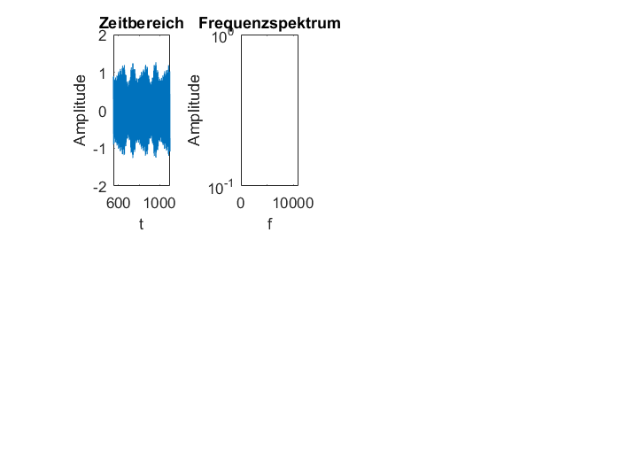
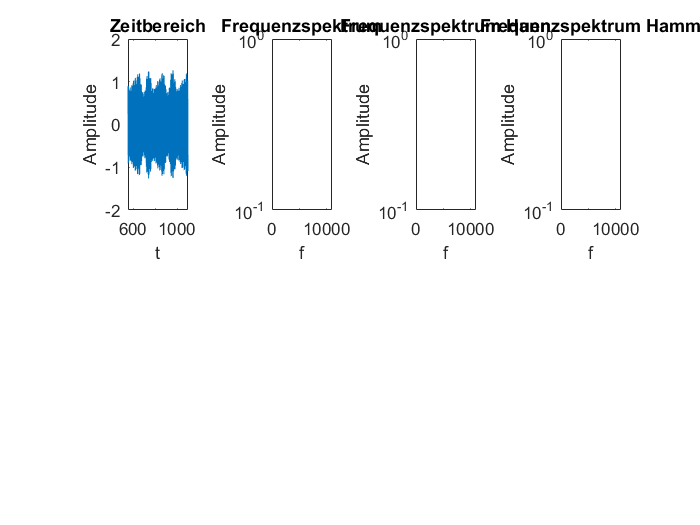

Contents
function[]= Reibenwein_5AHEL_Test(s,fs,window)
Bestimmt die Länge des Signals und legt die Datenpunkte fest
N=length(s);
S=s(1/fs:1/fs++N-1);
Warning: Integer operands are required for colon operator when used as index
Fenstert die Zeitfunktionen mit den jeweiligen Fensterfunktionen
S_Hann=S*hann(N);
S_Hamm=S*hamming(N);
S_Kaiser=S*kaiser(N);
Bildet Realteil der FFT des Original- und gefensterten Signals
Y=abs(fft(S));
Y_Hann=abs(fft(S_Hann));
Y_Hamm=abs(fft(S_Hamm));
Y_Kaiser=abs(fft(S_Kaiser));
Bestimmt cutoff und Skalierung für die FFT-Plots
cutoff=ceil(N/2);
k=(0:N-1)*fs/N;
Plotet Zeitsignal
subplot(2,4,1);
plot(s);
xlabel('t');
ylabel('Amplitude');
title('Zeitbereich');
axis([0.05*fs 0.1*fs -2 2]);
Plotet DFT mit Rechteckfenster
subplot(2,4,2);
semilogy(k,20*log10(Y/cutoff));
xlabel('f');
ylabel('Amplitude');
title('Frequenzspektrum');
axis([0 fs 0 10]);

Plotet DFT mit Hanningeckfenster
subplot(2,4,3);
semilogy(k,20*log10(Y_Hann/cutoff));
xlabel('f');
ylabel('Amplitude');
title('Frequenzspektrum Hann');
axis([0 fs 0 10]);
Plotet DFT mit Hammingeckfenster
subplot(2,4,4);
semilogy(k,20*log10(Y_Hamm/cutoff));
xlabel('f');
ylabel('Amplitude');
title('Frequenzspektrum Hamm');
axis([0 fs 0 10]);

Plotet DFT mit Kaisereckfenster
subplot(2,4,5);
semilogy(k,20*log10(Y_Kaiser/cutoff));
xlabel('f');
ylabel('Amplitude');
title('Frequenzspektrum Kaiser');
axis([0 fs 0 10]);
end